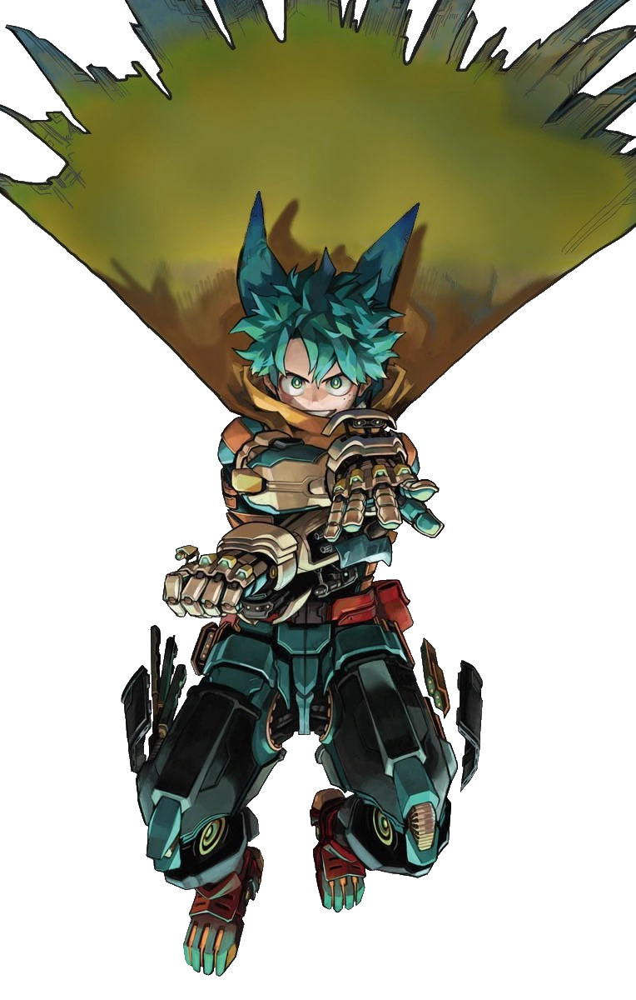

Hereditario
Los Quirks se transmiten genéticamente y pueden combinarse entre generaciones, creando habilidades completamente nuevas.
僕のヒーローアカデミア · Season 7
En un mundo donde el 80% de la población posee un Quirk, un chico sin poderes decidió convertirse en el héroe número uno.

Una singularidad genética. Un superpoder. Y, para muchos, una condena o una promesa.
Los Quirks se transmiten genéticamente y pueden combinarse entre generaciones, creando habilidades completamente nuevas.
Se dividen en Emisor, Transformación y Mutación. Cada tipo exige un entrenamiento y un control distintos.
El uso de Quirks en público está prohibido sin licencia. Solo los héroes profesionales pueden actuar legalmente.
Un Quirk que se acumula y se transfiere. Ocho portadores antes de Izuku Midoriya, el noveno.
Los futuros pilares de la sociedad. Selecciona un personaje para ver su ficha completa.
La escuela de héroes más prestigiosa de Japón. Cuatro cursos, un solo ideal: Plus Ultra.
La clase de Izuku, Bakugo y Todoroki. Marcada por la tragedia y por una voluntad inquebrantable.
Rivales directos de la 1-A. Liderados por Neito Monoma, con Quirks igual de impresionantes.
Mirio Togata, Nejire Hado y Tamaki Amajiki. La élite absoluta de la academia.
All Might, Eraser Head, Present Mic, Midnight y Nezu forman a la próxima generación.
PLUS ULTRA!!!
No importa cuán imposible parezca el sueño: siempre hay un camino para convertirse en héroe.